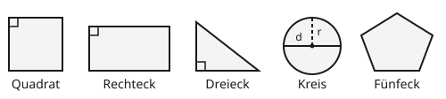

Das brauchst du für dieses Kapitel
Mit einem KI-Tutor lernen
Ein KI-Tutor erklärt dir diese Seite und hilft dir bei den Aufgaben. Wähl deinen Assistenten:
Mit Claude öffnen Mit ChatGPT öffnen Mit Mistral Vibe öffnen
Du nutzt dein eigenes Konto beim Anbieter. Der Assistent ist kein Angebot von lernapps.net: lernapps liefert nur Inhalte und Aufgaben. Die Wahl gilt für alle Seiten, nur auf diesem Gerät.
Wofür diese Seite ist
Wenn du Körper beschreiben und zeichnen willst, brauchst du die Flächen, aus denen sie bestehen, und das sind ebene Figuren. Du brauchst zwei Bausteine: „Parallelen, Senkrechten und Abstand“ und „Ebene Grundfiguren“. Lies die Begriffe und prüfe dich mit den beiden Aufgaben am Ende.
Parallelen, Senkrechten und Abstand
Wenn du Linien beschreiben willst, die sich nie treffen oder im rechten Winkel kreuzen, brauchst du diese Wörter. „Ich kann parallele und senkrechte Geraden zeichnen und Abstände messen.“
- Senkrecht
Zwei Linien sind senkrecht zueinander, wenn sie einen rechten Winkel bilden, eine Ecke wie die einer Heftseite. Beispiel: Wand und Boden im Zimmer.
- Parallel und Abstand
Zwei Linien sind parallel, wenn sie überall gleich weit voneinander entfernt sind. Dieser Abstand wird senkrecht gemessen. Beispiel: Die Linien in deinem Heft sind parallel, ihr Abstand ist 0,5 cm.
 © CC-BY-4.0
© CC-BY-4.0Parallele Linien (links) und senkrechte Linien (rechts).
Abstand im Heft
Zwei Heftlinien haben 0,5 cm Abstand. Vier Linien weiter ist der Abstand zur ersten 4 · 0,5 cm = 2 cm. Du misst immer senkrecht von Linie zu Linie.
Ebene Grundfiguren
Wenn du die Flächen eines Körpers benennen willst, brauchst du die Namen der ebenen Figuren. „Ich kann ebene Grundfiguren erkennen, benennen und ihre Eigenschaften beschreiben.“

© CC-BY-4.0Die ebenen Grundfiguren. Das kleine Winkelzeichen zeigt einen rechten Winkel.
- Seite und Ecke
Eine Seite ist eine gerade Strecke am Rand einer ebenen Figur. Eine Ecke ist ein Punkt, an dem zwei Seiten zusammenstoßen. Bei Körpern heißen solche Strecken später Kanten.
- Quadrat und Rechteck
Ein Rechteck hat vier rechte Winkel. Gegenüberliegende Seiten sind gleich lang und parallel. Beispiel: 5 cm lang und 3 cm breit, also zwei Seiten von 5 cm und zwei von 3 cm. Ein Quadrat ist ein besonderes Rechteck: Alle vier Seiten sind gleich lang.
- Dreieck
Ein Dreieck hat drei Seiten und drei Ecken.
- Kreis
Ein Kreis ist rund. Alle Punkte des Randes sind gleich weit vom Mittelpunkt entfernt. Die Strecke vom Mittelpunkt zum Rand heißt Radius. Der Durchmesser geht durch den Mittelpunkt von Rand zu Rand und ist doppelt so lang wie der Radius. Beispiel: Radius 3 cm, Durchmesser 6 cm.
- Vieleck
Ein Vieleck ist eine ebene, geschlossene Figur, deren Rand aus lauter geraden Seiten besteht. Dreieck und Viereck sind Vielecke: Ein Viereck hat vier Ecken, ein Fünfeck fünf, ein Sechseck sechs.
Ein Fünfeck zählen
Ein Fünfeck hat 5 Ecken. An jeder Ecke stoßen zwei Seiten zusammen, also hat es auch 5 Seiten.
Kannst du das?
Aufgabe
Lösung
Richtige Antwort: Senkrecht – bilden einen rechten Winkel; Parallel – überall gleich weit entfernt; Abstand – senkrecht gemessene Entfernung; Quadrat – Rechteck mit vier gleichen Seiten; Durchmesser – geht durch den Mittelpunkt
Senkrecht, parallel und Abstand beschreiben, wie zwei Linien zueinander liegen. Quadrat und Durchmesser sind Namen für Figuren und Strecken, die du in Körpern wiederfindest.
Aufgabe
Drei Beispielaufgaben, jede mit ihrer Lösung:
Aufgabe Nr. 1
Ein Kreis hat den Radius 13 cm. Wie lang ist sein Durchmesser in Zentimetern?
Tipp
Der Durchmesser besteht aus zwei Radien.
Lösung
- Der Durchmesser ist doppelt so lang wie der Radius: 2 · 13 cm = 26 cm.
Richtige Antwort: 26
Aufgabe Nr. 2
Ein Kreis hat den Radius 6 cm. Wie lang ist sein Durchmesser in Zentimetern?
Tipp
Der Durchmesser besteht aus zwei Radien.
Lösung
- Der Durchmesser ist doppelt so lang wie der Radius: 2 · 6 cm = 12 cm.
Richtige Antwort: 12
Aufgabe Nr. 3
Ein Kreis hat den Radius 7 cm. Wie lang ist sein Durchmesser in Zentimetern?
Tipp
Der Durchmesser besteht aus zwei Radien.
Lösung
- Der Durchmesser ist doppelt so lang wie der Radius: 2 · 7 cm = 14 cm.
Richtige Antwort: 14
Falsch? Dann lies nach: Parallelen, Senkrechten und Abstand und Ebene Grundfiguren.
Du bist bereit, wenn du …
- weißt, was senkrecht, parallel und Abstand bedeuten,
- Quadrat, Rechteck, Dreieck, Kreis und Vieleck erkennst und beschreibst,
- Seite, Ecke, Radius und Durchmesser kennst.
Fehler gefunden oder eine Idee für diese App?